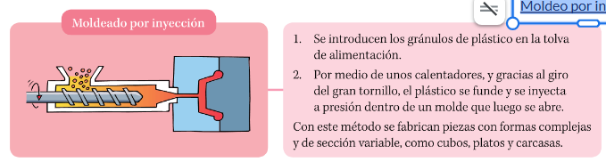
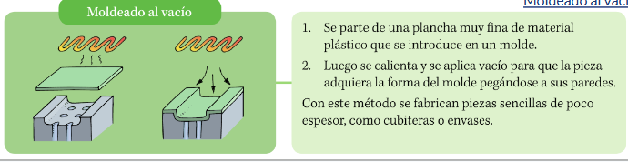

Plásticos
Técnicas de fabricación
Moldeo por inyección

Rellenar huecos
Pregunta Verdadero-Falso
Retroalimentación
Verdadero
Retroalimentación
Verdadero
Moldeado al vacio

Obra publicada con Licencia Creative Commons Reconocimiento Compartir igual 4.0